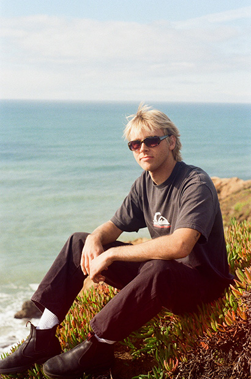

Portfolio
Hi, my name is Tanner Price and I am a Visual Communication Design student at San Francisco State University. Originally from San Luis Obispo, California, I recently moved to the Bay Area to continue my education and focus more seriously on design. Being in a new environment has given me the chance to meet new people, experience a different creative community, and spend more time developing my design work. At San Francisco State, I am building my skills in visual communication while learning more about how design operates within larger cultural and historical contexts. I’m especially interested in how typography, composition, and imagery can work together to communicate ideas clearly. Many of my projects focus on experimenting with layout and type to find simple but effective ways to present information. I enjoy paying attention to small details and figuring out how those details can strengthen the overall design. Outside of design, I spend a lot of my time surfing, playing guitar, and drawing. Growing up on the Central Coast made surfing a regular part of my life, and it’s still one of my favorite ways to spend time away from the computer and out in nature. Being in the ocean is something I’ve always enjoyed, and it’s a good balance to the more structured side of design work. Playing guitar and drawing are also creative outlets that I come back to regularly. Both give me a more relaxed way to explore ideas and creativity without overthinking things too much. These interests often end up influencing how I approach my visual work. A few fun facts about me: my favorite food is a breakfast burrito, my favorite color is forest green, and my dream car is a 90s Toyota Tacoma with a built-out camper bed for road trips.